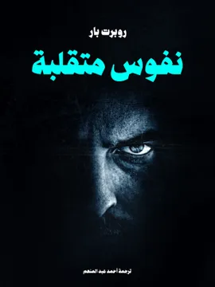

نفوس متقلبة

قراءة عربية أصلية محددة النطاق في الصفحات 11، 12 من ملف PDF المرتبط، وليست تلخيصا كاملا للكتاب. نناقش ما تدعمه هذه المقاطع فقط.
مكتب معلق فوق فناء مصنع لندني
يختار روبرت بار لروايته افتتاحية مكانية بارعة: المكتب الإداري لمصنع مونكتون آند هوب مشيّد من الخشب بين مبنيي «الورش» القرميديين كأنه معلق بين السماء والأرض، لأن الحاجة أم الاختراع حين شُغلت مساحات المبنيين بالأعمال المتزايدة واضطر المكتب، روح المشروع بأكمله، أن يتخذ موقعًا خارج جسده الأصلي. الموقع الفريد يمنح المكتب ضوءًا وهواءً ونجاة من اهتزازات الآلات وبابين إلى المبنيين، وسارتويل فخور به لأنه من رسم مخططه، فمنحته الشركة مساحة إضافية كبيرة.
زاوية وحدود القراءة
قراءة في مطلع الفصل الأول من الصفحتين 11 و12، لا في الرواية كاملة. وصف المكتب والمصنع والشخصية (جون سارتويل مدير المصنع) من النص المترجم كما ورد. خط الحبكة ومعنى عنوان «نفوس متقلبة» لا يظهران في الصفحات المقروءة.
الطبعة والقراءة
هذه الترجمة العربية صادرة ومتاحة مجانًا من مؤسسة هنداوي بشكل قانوني؛ حيث إن نص العمل الأصلي يقع في نطاق الملكية العامة تبعًا لقوانين الملكية الفكرية.
تنزيل PDF المجاني ↓ القراءة والمصدر الرسمي ↗